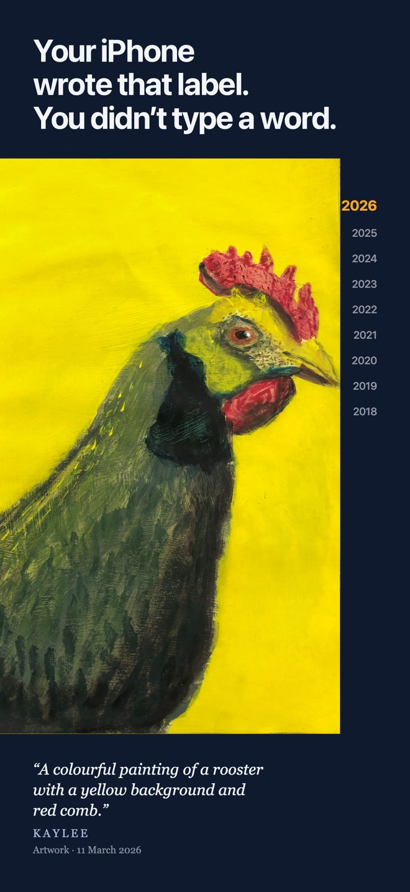
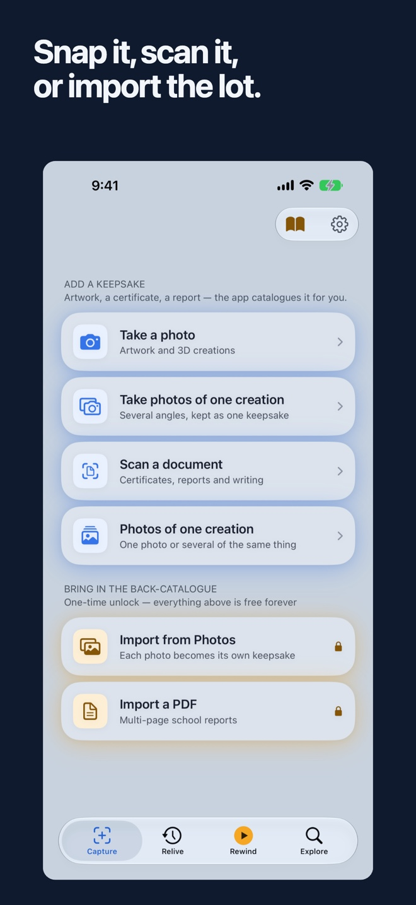
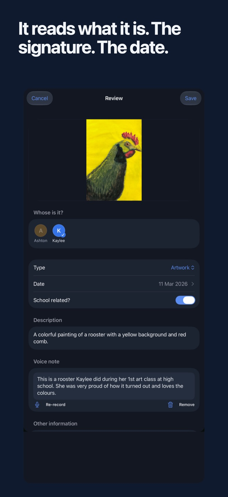
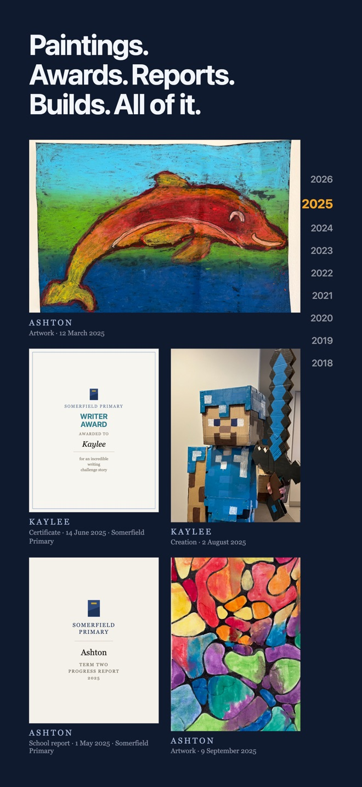
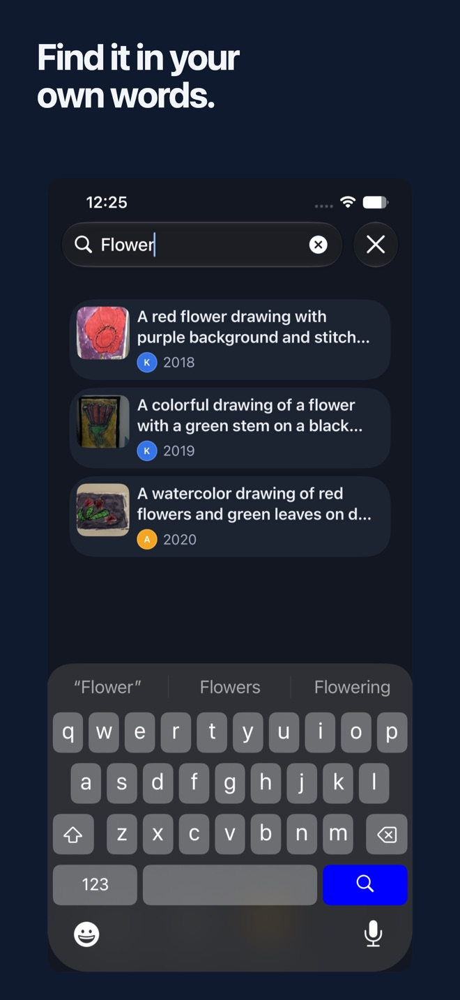
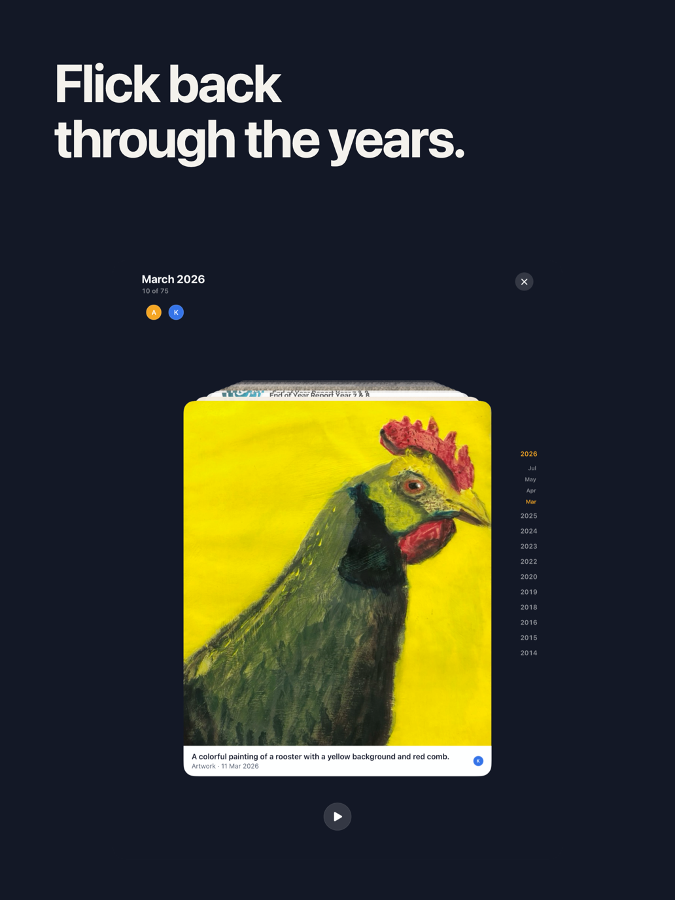
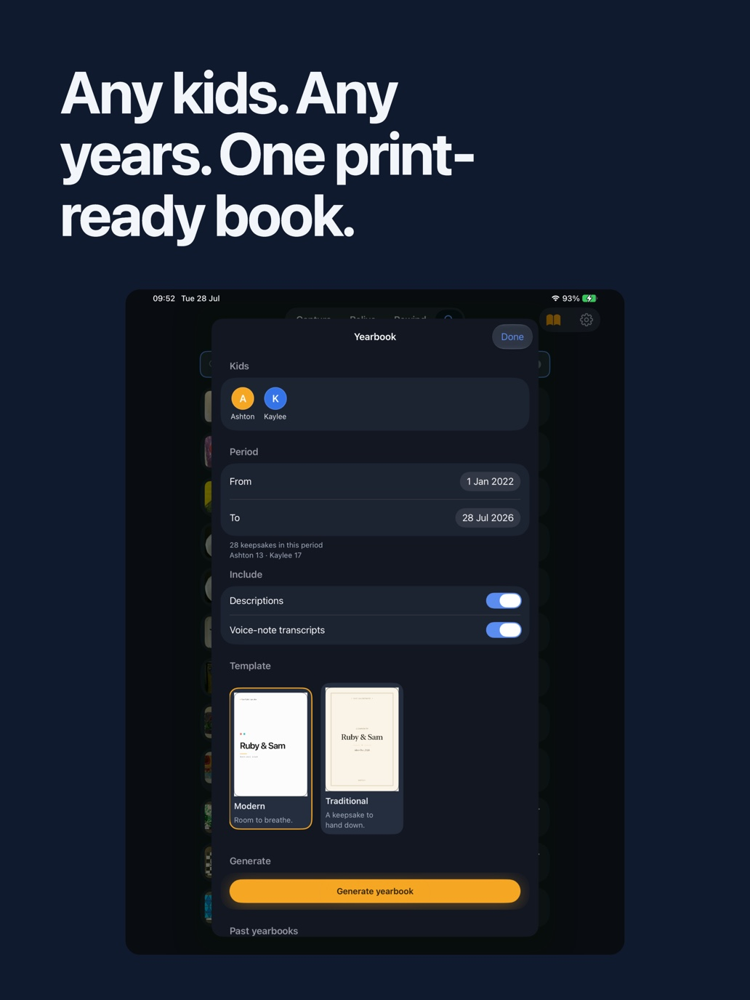

Point your camera at the painting, the certificate, the Lego build. FamilyKeepsake reads who made it, what it is and when - on your device - then files it as a real photo with a readable name in your family's own iCloud. Search it, revisit it in Rewind, or turn years of creations into a book.


The AI runs on the iPhone or iPad in your hand. Photos are never uploaded for AI processing, and nothing is sent to us.
Keepsakes are real photos and PDFs in your family's own iCloud Drive - not our cloud.
Capture is free forever. One purchase opens the full archive and Yearbooks. No subscription, ever.
The app never asks who you are. Nothing is tracked, measured or sold.
Every week they bring home more: a painting still wet at the corners, a swimming certificate, a Lego spaceship you're not allowed to touch. Some of it makes the fridge door. Most of it goes into a bag in a cupboard, waiting for a wet Sunday that never comes.
Photographing it should be the answer - but those photos sink into a camera roll full of screenshots and receipts, unnamed, undated, unfindable. Keeping the memory shouldn't mean typing out who-what-when three hundred times.
FamilyKeepsake makes the photo do the work.
Names and dated school stints, once. From then on the app can match a creation to the school they attended when it was made.
Artwork and creations by photo; certificates and reports by document scan. One creation at a time - free forever.
It has read the signature, the date written on it, and what it is - and drafted a description. Fix anything with a tap, or just hit Save.
"Ashton – Certificate – 14 Jun 2025.jpg", in a Certificates folder, in your family's own iCloud Drive.
Search any word on it or about it. Or press Rewind and flick back through the years.
Take the photo, and FamilyKeepsake reads the item on the spot - with Apple Intelligence, on the device in your hand. The name they signed. The date scrawled in the corner. Whether it's a certificate or a masterpiece. The school can come from your family's dated timeline, not a regional year-level guess.

Every keepsake is saved as an ordinary photo or PDF with a readable name, foldered by category, in your family's own iCloud Drive. Open them in Files. Copy them anywhere. If FamilyKeepsake vanished tomorrow, your kids' childhood would still be sitting there - organised.

Every keepsake is findable by every word connected to it - the words printed on it, the words of the story you told about it, the description the AI wrote for it. "Kaylee swimming certificate" just… finds it.

Rewind puts the whole collection on a dark stage - newest at the front, the past receding behind. Flick, and a school term flies by. Cross into an earlier year and it announces itself, full screen. It's the shoebox moment, minus the attic.

Tap the mic while you save and let them explain it. The recording is kept beside the artwork in your archive; the words are transcribed on the device and become searchable. In ten years, that voice will be worth more than the painting.
Choose one child or the whole family, pick any date range, then choose a Modern or Traditional design. FamilyKeepsake composes the collection into a real PDF on your device - favourites on full feature pages, everything else in date order.

FamilyKeepsake is a native iPhone and iPad app, built around Apple Intelligence and the places iOS already puts within reach.
A Home Screen or Lock Screen widget brings an older creation back, and opens straight into that child's Rewind.
Put Capture in Control Center, on the Lock Screen or on the Action Button and open the camera in one step.
Say “Capture with FamilyKeepsake” or use the app shortcut from Shortcuts to jump directly into capture.
Send a photo or document into FamilyKeepsake from another app. It is read on device and waits in the review inbox.
Many keepsake services upload your children's work to their own cloud. FamilyKeepsake is built the other way around: the AI reads on your device, saved files sync through your private iCloud, and there is no FamilyKeepsake-operated cloud at all.
Nothing is uploaded for AI processing. Capture and reading work in flight mode.
No sign-up, no email, no password. The app never asks who you are.
Files and sync ride on the Apple Account your family already owns.
No developer analytics or advertising SDKs. Nothing is tracked, measured or sold.
There are no servers, so there's nothing for a monthly fee to fund.
It catalogues what your kids make - the artefacts, not the children.
FamilyKeepsake has no servers. The AI is Apple silicon in your hand; storage and sync use the private iCloud attached to your Apple Account. We cannot see, receive or hold your family's content - and that isn't a promise resting on a future policy. It's the architecture.
Capturing their things as they make them is free forever - full AI, no item caps, no trial clocks. One purchase adds the bulk lanes for everything already made and the Yearbook that grows more valuable with every save.
Why no subscription? The AI runs on your device and the files live in your own iCloud. Our costs don't grow with your archive, so your price shouldn't either.
Many keepsake services put your kids' work on their servers and tie the archive to an ongoing plan. FamilyKeepsake takes a different route.
The apps in this category rent you a shoebox. FamilyKeepsake organises the one your family already owns.
In your family's own iCloud Drive, as ordinary photos and PDFs with readable names, organised into folders by category. FamilyKeepsake has no servers - we couldn't hold your photos if we wanted to.
No photo is uploaded for AI processing. The reading happens on your iPhone or iPad using Apple Intelligence and works in flight mode. FamilyKeepsake sends nothing to us; saved files sync only through your private iCloud.
Everything stays. Your keepsakes are ordinary files in your own iCloud Drive - named, foldered, and readable by any app. The archive outlives the app, by design.
No - and it never will be. Capturing one creation at a time is free forever. A single one-time purchase unlocks bulk imports, PDF imports, share-sheet saves and Yearbooks. Your local price is shown in the App Store.
Free forever: capture with the camera or document scanner, photos of one creation, full AI reading, unlimited keepsakes, search, Rewind and voice notes. The one-time unlock adds bulk Photos import, PDF import, share-sheet saves and print-ready Yearbooks, and is eligible for Apple Family Sharing.
FamilyKeepsake is built on Apple Intelligence, so it needs iOS or iPadOS 27 on an iPhone 15 Pro or newer, or an iPad with an M-series chip. The v1 app runs on iPhone and iPad; its ordinary iCloud Drive files can also be opened on a Mac.
Kids sign their work. FamilyKeepsake reads the name - even a wobbly one in a corner - and matches it against your family. A joint creation can belong to more than one child.
Scan them from the app for free, or use the one-time unlock to import a multi-page PDF. The real PDF is archived in your iCloud Drive, every page is read, and the school can be filled from your family's dated school timeline.
Each finished Yearbook is a standard PDF saved to iCloud Drive › FamilyKeepsake › Yearbooks. Open it again from the app, share it anywhere, print it at home or take it to any print shop.
You always see the card before it saves, and every field can be fixed with a tap. Filenames are never built from AI guesses - only from confirmed facts: child, type and date.